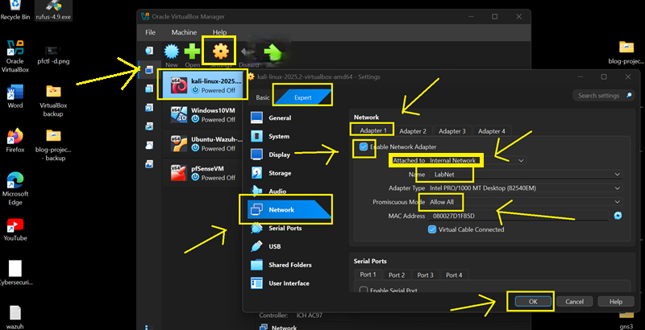
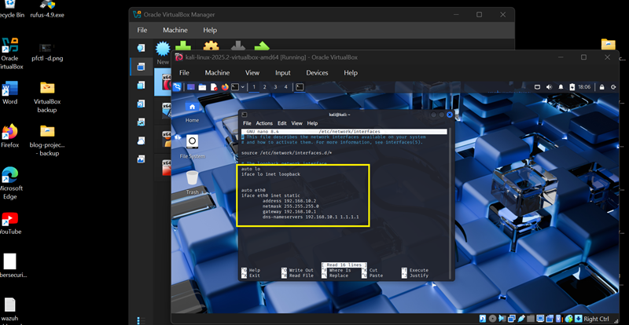
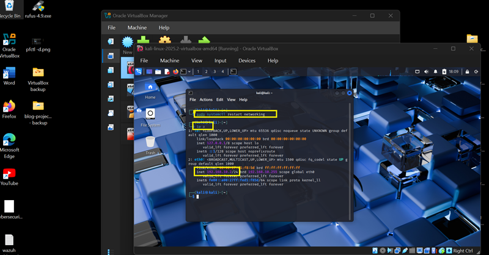
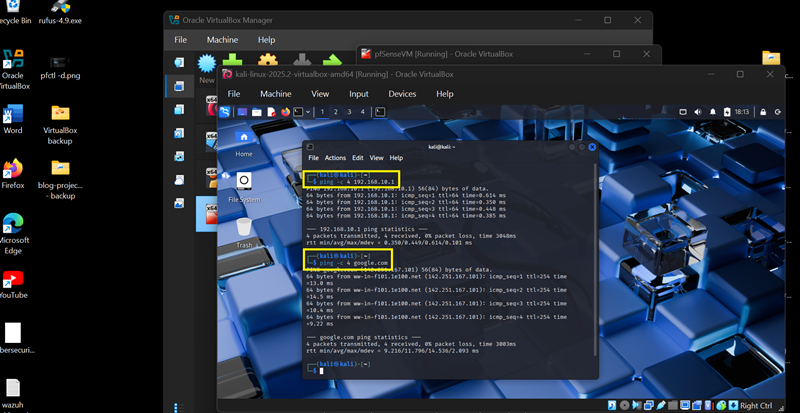
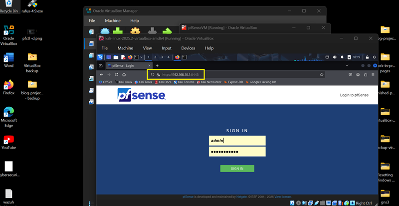

Overview
Kali Linux is configured with a static IP on the LabNet internal network to ensure reliable connectivity with pfSense and other virtual machines used in security testing.
Step 1 — VirtualBox Adapter Configuration
Internal Network (LabNet)
- Enable Adapter
- Attached to: Internal Network
- Name: LabNet
- Promiscuous Mode: Allow All

Step 2 — Configure Static IP
Edit network configuration:
sudo nano /etc/network/interfacesStatic configuration:
auto eth0
iface eth0 inet static
address 192.168.10.2
netmask 255.255.255.0
gateway 192.168.10.1
dns-nameservers 192.168.10.1 1.1.1.1Save: CTRL + X → Y → ENTER

Step 3 — Restart Networking
sudo systemctl restart networking p aConfirm assigned IP: 192.168.10.2

Step 4 — Connectivity Test
ping -c 4 192.168.10.1
ping -c 4 google.comFirst verifies pfSense connectivity, second verifies internet access.

Step 5 — Access pfSense
- Open browser
- Navigate to: https://192.168.10.1:8443

Configuration Complete
Kali Linux is now configured with a static IP and fully integrated into the LabNet internal network, enabling stable communication with pfSense and other lab systems.